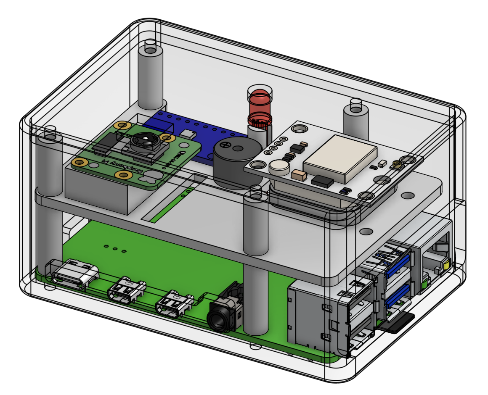
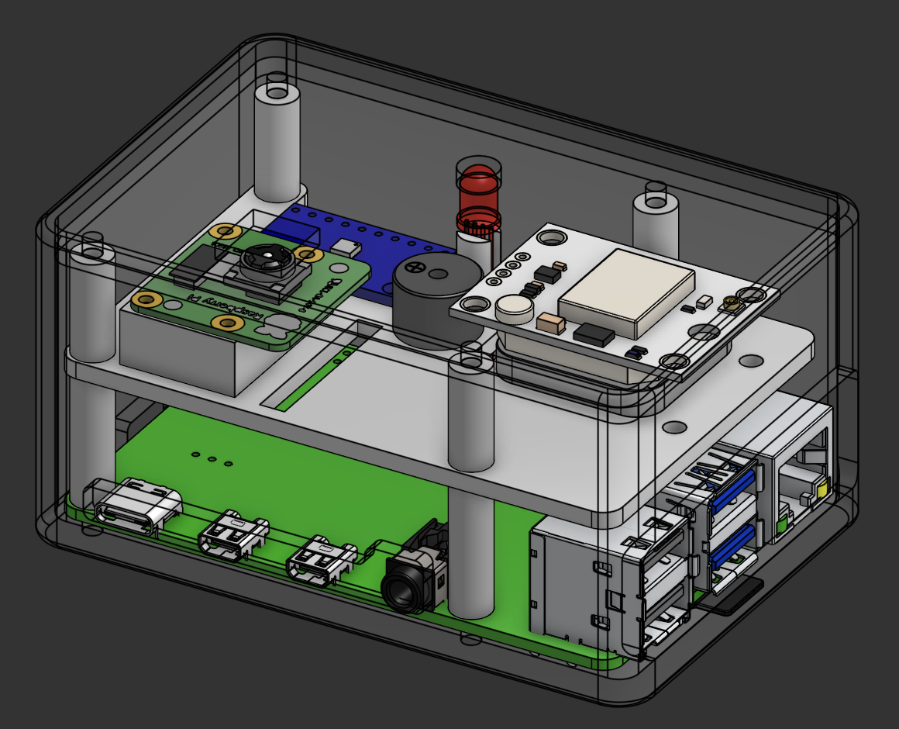
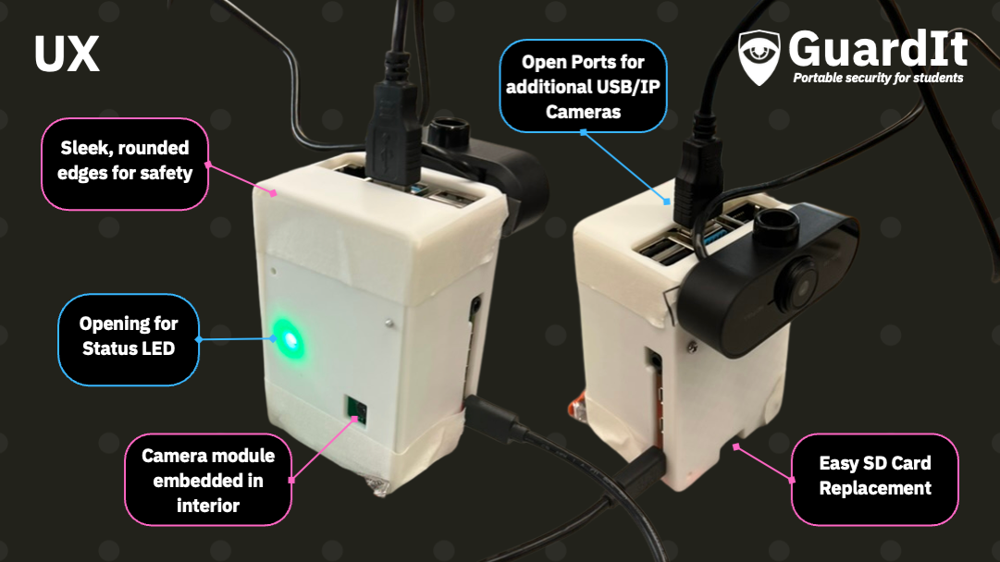
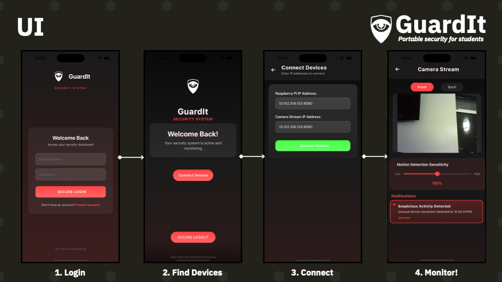

Theft-Deterrent Security System
Summer program · Team of 5 · Jul – Aug 2025
Overview
- My role
- CAD, mechanical and electrical lead
- Timeframe
- Jul 2025 – Aug 2025
- Team
- 5 people
- Tools
- Onshape, circuit design, oscilloscope, Raspberry Pi
Exploded view
The real parts from my Onshape assembly, taken apart one layer at a time. The mounting layer is the piece that made the design work: one printed plate that holds every component above the Raspberry Pi.
My role
I did all of the CAD on a five-person team, designing the physical device in Onshape. I also split the wiring with one teammate, connecting the Raspberry Pi, camera, IMU, alarm, and flashing LED into one working product, while the rest of the team wrote the software.
With my teammates, I helped validate demand through surveys and interviews and pitched the product as a startup.
Problem
People often have to leave their belongings unattended in places like libraries, cafés, or airports, with no way of knowing if someone takes them. We set out to build an affordable device that watches over your things and alerts you the moment someone gets too close or takes an item. The challenge was building a fully working prototype that customers would actually want in under three weeks, along with a plan to grow it into a company.
- Requirement
- Fully working prototype that customers were willing to adopt
- Timeline
- Under 3 weeks from start to finished prototype
- Cost
- $76.55 prototype, projected $17.80 per unit at scale
- Business plan
- 6-year financial forecast showing how the company would scale
Process
We started from the program's theme of "connecting with one another," narrowed hundreds of ideas down to one, and then I designed the device's casing around a Raspberry Pi, refining it through several rounds of fit issues until it held every component cleanly.
- Research & concepts Each of us brainstormed 50 ideas around the program's theme. We discussed them as a group and used a decision matrix to choose the theft-deterrent device.
- Design We first chose the Raspberry Pi and the components it would run. We originally wanted a small, slim device, but decided a larger, more intimidating one would deter theft better. Besides the camera, we added an IMU so the device can tell from its own acceleration when it is picked up or moved, which is how it knows something is being stolen. I designed a mounting layer on top of the Raspberry Pi to hold every component, with openings in the casing for the LED and camera. I split the case into three parts: a main casing for five faces, a mounting layer for all the components, and a lid as the final face. This kept the design simple and easy for the team to build around.
- Iteration My first design used two forward-angled cameras for about 180° of view. For the prototype, we switched to one internally mounted camera and a webcam mounted on the back. Because I fit the case tightly to the Raspberry Pi's shape, early versions blocked some ports, including the microSD slot we needed. I went through several iterations to fix the fit until the casing worked well.
- Build & test We 3D printed the casing and wired the Raspberry Pi, cameras, IMU, alarm, and LED inside it. We tested the prototype in a restaurant, across our dorm building, and outdoors. In each setting, we walked past it at a distance, walked toward it, reached for it, and picked it up and shook it, while monitoring everything through the app to confirm that push notifications and the live camera feed worked when they were needed.
- Validation Once the prototype and financials were done, we surveyed our program cohort and friends and posted on Reddit to gauge how well the product met people's needs and whether they would use it.


Loading 3D model…

